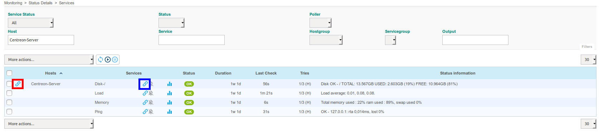

Link from monitoring front end¶
The technical procedure is available in Centreon front-end through a link icon:
By clicking on link icon, the user is redirected to the corresponding procedure.
If the link icon is on the left of a host name, the wiki page containing the procedure for the host will be displayed.
If the link icon is on the right of a service name, the wiki page containing the procedure for the service will be displayed.
Synchronization¶
There’s a cron job that updates hosts, services and hosts/services templates configuration.
For example, if you create a page in the wiki using the usual pattern
(ex: Host:Centreon-Server or Service:Centreon-Server Disk-/),
It will add the link to the page in the URL field of object’s extented information.